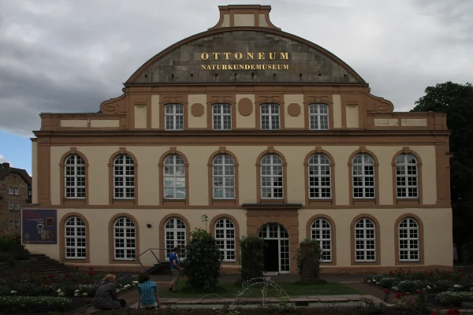
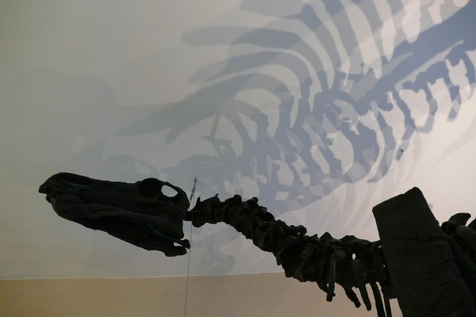

Start / Planetarium
Aaron Schiele
geprüft am
geprüft am
Was erwartet dich im Planetarium?
Unter der Kuppel sitzen 54 Gäste. Ein Zeiss-Projektor zeigt bis zu 7.000 Sterne, dazu kommt eine digitale Kuppelprojektion, mit der die Vorführungen durch das Sonnensystem fliegen. Es gibt Programme für Kinder und Familien und Abende für Erwachsene. Der Ort hat Geschichte: Schon in den 1760er Jahren beobachtete Landgraf Friedrich von den Dächern der Orangerie Mond und Planeten.
Das Astronomisch-Physikalische Kabinett, das Museum im selben Gebäude, ist wegen einer Grundsanierung derzeit geschlossen. Einzelne Stücke daraus zeigt das Hessische Landesmuseum in kleinen Sonderpräsentationen. Das Planetarium selbst ist davon nicht betroffen.
Für welches Alter passt das Planetarium?
Kinder unter drei Jahren dürfen nicht in den Saal. Für Kinder ab sechs gibt es eigene Programme, etwa eine Weltraumreise von rund 45 Minuten. Im Saal ist es dunkel und ruhig, Essen und Trinken sind nicht erlaubt. Mehr Ideen für Familien stehen unter Kassel mit Kindern.
Wie bekommst du Tickets?
Hinein kommst du nur zu einer Vorstellung, nicht zwischendurch. Buch die Karten deshalb vorher: Mit 54 Plätzen ist eine Vorstellung am Wochenende und in den Ferien schnell voll. Die Termine stehen im Veranstaltungskalender von Hessen Kassel Heritage, telefonisch hilft das Planetarium unter 0561 316 80-500 weiter.
| Karte | Preis |
|---|---|
| Erwachsene | 8 Euro |
| Ermäßigt | 5 Euro |
| Unter 18 Jahren | 2 Euro |
| Gruppen ab 20 Personen | 5 Euro pro Person |
Praktisches: Öffnungszeiten und Anreise
Das Planetarium hat donnerstags bis sonntags und an Feiertagen von 10 bis 17 Uhr geöffnet, montags bis mittwochs ist es zu. Am 24., 25. und 31. Dezember bleibt es geschlossen, am 1. Januar öffnet es von 12 bis 17 Uhr. Der Zugang ist barrierefrei mit Aufzug, Assistenzhunde sind willkommen.
Die Orangerie liegt in der Karlsaue, direkt unterhalb der Innenstadt. Vom Bahnhof Wilhelmshöhe fahren die Linien 1, 3 und 4 zum Friedrichsplatz, von dort gehst du 8 bis 12 Minuten hinunter. Ein Spaziergang durch die Karlsaue gehört dazu, mehr dazu unter Orangerie und Karlsaue. Für einen Regentag lässt sich der Besuch gut mit Museen verbinden, siehe Kassel bei Regen.
Häufige Fragen
Was kostet das Planetarium in Kassel?
Eine Vorstellung kostet für Erwachsene 8 Euro, ermäßigt 5 Euro und für Kinder und Jugendliche unter 18 Jahren 2 Euro. Gruppen ab 20 Personen zahlen 5 Euro pro Person.
Wann hat das Planetarium Kassel geöffnet?
Donnerstags bis sonntags und an Feiertagen von 10 bis 17 Uhr. Montags bis mittwochs sowie am 24., 25. und 31. Dezember ist geschlossen.
Ab welchem Alter darf man ins Planetarium Kassel?
Ab drei Jahren. Jüngere Kinder dürfen nicht in den Vorführsaal, die Kinderprogramme sind meist ab sechs Jahren gedacht.
Muss man Tickets für das Planetarium vorher buchen?
Das ist zu empfehlen. Einlass gibt es nur zu einer Vorstellung, und der Saal hat 54 Plätze.
Wo ist das Planetarium in Kassel?
In der Orangerie in der Karlsaue, An der Karlsaue 20d, 34121 Kassel. Vom Friedrichsplatz sind es 8 bis 12 Minuten zu Fuß.
Quellen abgerufen am 16.11.2026
- Hessen Kassel Heritage Planetarium · Planetarium (englische Seite mit Preisen) · Orangerie
- documenta Besuch FAQ (Tram zum Friedrichsplatz)
Weiterlesen

Kassel bei Regen
Kassel bei Regen: Schloss Wilhelmshöhe, Grimmwelt, Naturkundemuseum, Landesmuseum, Planetarium und Kurhessen-Therme mit Öffnungszeiten und Preisen.
Weiterlesen
Kassel mit Kindern
Kassel mit Kindern: Bergpark und Löwenburg, Grimmwelt, Naturkundemuseum, Planetarium und Karlsaue mit Öffnungszeiten und Kinderpreisen im Überblick.
Weiterlesen
Grimmwelt Kassel
Grimmwelt Kassel: Öffnungszeiten, Eintritt für Erwachsene, Kinder und Familien, was die Ausstellung zeigt, Dachterrasse und Anreise mit Tram und Auto.
Weiterlesen